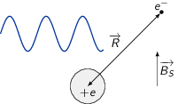
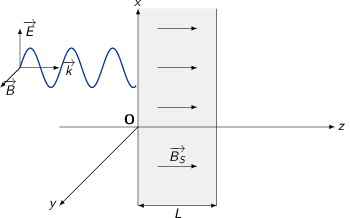
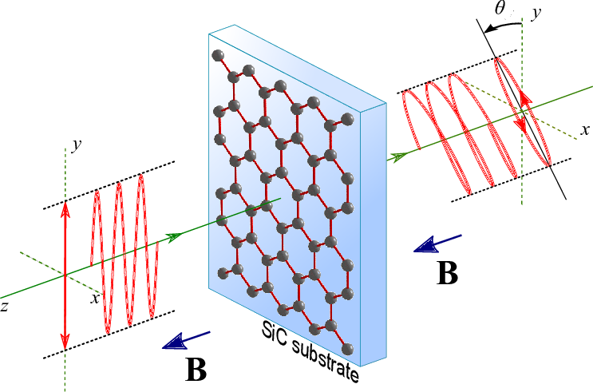
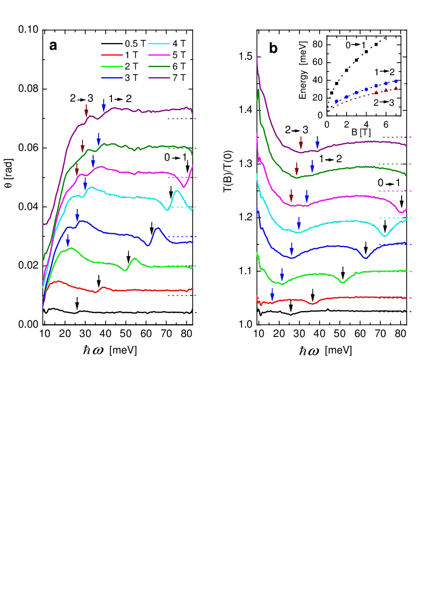

TD8 : Propagation dans le vide et les milieux diélectriques
1 Effet Faraday dans un diélectrique

1.1 Équation de propagation des ondes
- Équations de Maxwell
\begin{align*}
\div\vv{E}&=\frac{\rho}{\epsilon_0}\\
\rot\vv{E}&=-\frac{\partial\vv{B}}{\partial t}\\
\div\vv{B}&=0\\
\rot\vv{B}&=\mu_0\vv{j}+\epsilon_0\mu_0\frac{\partial\vv{E}}{\partial t}
\end{align*}
L'équation de propagation du champ électrique s'écrit
\begin{align*} \rot\left(\rot\vv{E}\right)&=\grad\left(\div\vv{E}\right)-\Delta\vv{E}=-\frac{\partial\rot\vv{B}}{\partial t}\\ -\Delta\vv{E}+\grad\left(\frac{\rho}{\epsilon_0}\right)&=-\mu_0\frac{\partial\vv{j}}{\partial t}-\frac{1}{c^2}\frac{\partial^2\vv{E}}{\partial t^2}\\ \underbrace{\Delta\vv{E}-\frac{1}{c^2}\frac{\partial^2\vv{E}}{\partial t^2}}_{\square\vv{E}}&=\mu_0\frac{\partial\vv{j}}{\partial t}+\grad\left(\frac{\rho}{\epsilon_0}\right) \end{align*}Pour le champ magnétique, on a
\begin{align*} \rot\left(\rot\vv{B}\right)&=\mu_0\rot\vv{j}+\epsilon_0\mu_0\frac{\partial\rot\vv{E}}{\partial t}\\ -\Delta\vv{B}+\cancel{\grad\left(\div\vv{B}\right)}&=\mu_0\rot\vv{j}-\frac{1}{c^2}\frac{\partial^2\vv{B}}{\partial t^2}\\ \square\vv{B}&=-\mu_0\rot\vv{j} \end{align*} - Le champ électrique associée à l'onde est de la forme
\(\vv{E}=\vv{E_0}\,e^{i\left(\vv{k}.\vv{r}-\omega t\right)}\). L'expression de
la divergence de \(\vv{E}\) s'écrit
\begin{align*}
\div\vv{E}&=\frac{\partial E_x}{\partial x}+\frac{\partial E_y}{\partial y}+\frac{\partial E_z}{\partial z}\\
&=E_{0x}ik_x\,e^{i\left(\vv{k}.\vv{r}-\omega t\right)}+E_{0y}ik_y\,e^{i\left(\vv{k}.\vv{r}-\omega t\right)}+E_{0z}ik_z\,e^{i\left(\vv{k}.\vv{r}-\omega t\right)}\\
&=i\vv{k}.\vv{E}
\end{align*}
Dans le cas d'une onde transverse plane, la base des vecteurs \((\vv{k},\vv{E},\vv{B})\) forme une base orthogonale d'où \(\vv{E}\perp\vv{k}\) et \(\div\vv{E}=0\). L'équation de propagation de \(\vv{E}\) devient
\begin{align*} \Delta\vv{E}-\frac{1}{c^2}\frac{\partial^2\vv{E}}{\partial t^2}&=\mu_0\frac{\partial\vv{j}}{\partial t}\text{ avec }\vv{E}=\vv{E_0}\,e^{i\left(\vv{k}.\vv{r}-\omega t\right)}\\ \text{or }&\Delta\vv{E}=\left(\Delta E_x\right)\vv{u_x}+\left(\Delta E_y\right)\vv{u_y}+\left(\Delta E_z\right)\vv{u_z}\\ &\Delta\vv{E}=\left(\frac{\partial^2E_x}{\partial x^2}+\frac{\partial^2E_x}{\partial y^2}+\frac{\partial^2E_x}{\partial z^2}\right)\vv{u_x}+...\\ &\Delta\vv{E}=\left(-k_x^2E_x-k_y^2E_x-k_z^2E_x\right)\vv{u_x}-k^2E_y\vv{u_y}-k^2E_z\vv{u_z}\\ &\Delta\vv{E}=-k^2\vv{E}\\ \text{et }&\frac{\partial^2\vv{E}}{\partial t^2}=-\omega^2\vv{E},\frac{\partial\vv{j}}{\partial t}=-i\omega\vv{j}\\ \text{d'où }&-k^2\vv{E}+\frac{\omega^2}{c^2}\vv{E}=-i\mu_0\omega\vv{j}\\ &\vv{E}\left(k^2-\frac{\omega^2}{c^2}\right)=i\mu_0\omega\vv{j} \end{align*}Dans le vide \(\vv{j}=\vv{0}\), on retrouve la relation de dispersion à savoir \(k=\frac{\omega}{c}\).
1.2 Détermination des caractéristiques du milieu
- Principe fondamental de la dynamique appliqué à un électron du milieu \begin{align*} m\frac{d\vv{v}}{dt}=-m\omega_0^2\vv{R}-e\vv{E}-e\vv{v}\times\left(\vv{B}+\vv{B_S}\right) \end{align*}
- Pour une onde plane transverse, la norme du champ magnétique associé à l'onde est de l'ordre de \(\|\vv{B}\|=\frac{\|\vv{k}\times\vv{E}\|}{\omega}\) avec \(k=\frac{\omega}{c}\) d'où \(\|\vv{B}\|=\frac{\|\vv{E}\|}{c}\). Le rapport de la force magnétique exercée par le champ électrique de l'onde sur la force coulombienne devient \begin{align*} \frac{\|e\vv{v}\times\vv{B}\|}{\|e\vv{E}\|}=\frac{v/c\times E}{E}&=\frac{v}{c}\ll1\to\text{ électron non relativiste}\\ \|e\vv{v}\times\vv{B}\|&\ll\|e\vv{E}\| \end{align*}
- En différentialisant le champ de vitesse où \(\vv{v}\) est une fonction de
l'espace et du temps i.e. \(f(\vv{r},t)\), on obtient
\begin{align*}
d\vv{v}&=\frac{\partial\vv{v}}{\partial t}dt+\frac{\partial\vv{v}}{\partial x}dx+\frac{\partial\vv{v}}{\partial y}dy+\frac{\partial\vv{v}}{\partial z}dz\\
\frac{d\vv{v}}{dt}&=\frac{\partial\vv{v}}{\partial t}+\frac{\partial\vv{v}}{\partial x}\frac{dx}{dt}+\frac{\partial\vv{v}}{\partial y}\frac{dy}{dt}+\frac{\partial\vv{v}}{\partial z}\frac{dz}{dt}\\
\frac{d\vv{v}}{dt}&=\frac{\partial\vv{v}}{\partial t}+\frac{\partial\vv{v}}{\partial x}v_x+\frac{\partial\vv{v}}{\partial y}v_y+\frac{\partial\vv{v}}{\partial z}v_z\\
\underbrace{\frac{d\vv{v}}{dt}}_{\text{dérivée particulaire}}&=\underbrace{\frac{\partial\vv{v}}{\partial t}}_{\text{dérivée locale}}+\underbrace{\left(\vv{v}.\grad\right).\vv{v}}_{\text{dérivée convective}}
\end{align*}
En posant \(\vv{v}=\vv{v_0}\,e^{i(\omega t-\vv{k}.\vv{r})}\), la dérivée locale \(\frac{\partial\vv{v}}{\partial t}\) est égale à \(i\omega\vv{v}\), la dérivée convective prenant la forme
\begin{align*} \left(\vv{v}.\grad\right).\vv{v}=\vv{v}.(-)i\vv{k}.\vv{v} \end{align*}On déduit que
\begin{align*} \frac{\partial\vv{v}}{\partial t}+\left(\vv{v}.\grad\right).\vv{v}&=i\omega\vv{v}-i\vv{v}.\vv{k}.\vv{v}\\ &=i\omega\vv{v}\left(1-\frac{\vv{k}.\vv{v}}{\omega}\right)=i\omega\vv{v}\left(1-\frac{v}{v_\phi}\right)\\ \frac{d\vv{v}}{dt}&\simeq\frac{\partial v}{\partial t}\to\frac{v}{v_\phi}=\frac{v}{c}\ll1 \end{align*}
- Cas où le champ magnétique statique est nul \(\vv{B_S}=\vv{0}\). La
polarisation \(\vv{P}\) correspond, par définition, à la densité volumique de
moment dipolaire électrique \(\vv{p}\) où \(\vv{p}=-e\vv{R}\). Sachant qu'il y a
\(n\) dipôles ion-électron par unité de volume, la polarisation est donc égale
à \(\vv{P}=n\times\vv{p}=-ne\vv{R}\). Par ailleurs, en l'absence de champ
magnétique statique, l'équation du mouvement de l'électron se réduit à
\begin{align*}
m\frac{\partial\vv{v}}{\partial t}&=-e\vv{E}-m\omega_0\vv{R}\\
m\frac{\partial^2\vv{R}}{\partial t^2}&=-e\vv{E}-m\omega_0\vv{R}\\
m\times(-i\omega)^2\vv{R}&=-e\vv{E}-m\omega_0\vv{R}\\
\vv{R}&=\frac{-e\vv{E}}{m(\omega_0^2-\omega^2)}\\
\vv{P}&=-ne\vv{R}=\frac{ne^2\vv{E}}{m(\omega_0^2-\omega^2)}
\end{align*}
Si le milieu est linéaire, homogène et isotrope, la polarisation est égale à \(\epsilon_0\chi_e\vv{E}\) et \(\epsilon_r=1+\chi_e\) d'où
\begin{align*} \chi_e=\frac{ne^2}{m\epsilon_0(\omega_0^2-\omega^2)}=\frac{\omega_p^2}{\omega_0^2-\omega^2} \end{align*}Dans le cas statique i.e. \(\omega=0\), la susceptibilité électrique est alors égale à \(\chi_e=\frac{\omega_p^2}{\omega_0^2}\) et la permitivité relative \(\epsilon_r=1+\chi_e=1+\frac{\omega_p^2}{\omega_0^2}\).
Les propriétés diélectriques du milieu dépendent donc de la densité d'ion-électron de même que de l'intensité de la liaison ion-électron caractérisée par la pulsation \(\omega_0\) : en statique, la permitivité sera d'autant plus grande que le milieu sera dense et qu'il sera hautement ionisé i.e. \(\omega_0\to0\).
- Cas où le champ magnétique \(B_S\) est non nul. Le principe fondamental de la
dynamique s'écrit
\begin{align*}
m\frac{\partial^2\vv{R}}{\partial t^2}&=-e\vv{E}-e\frac{\partial\vv{R}}{\partial t}\times\vv{B_S}-m\omega_0^2\vv{R}\\
m\omega_0^2\vv{R}-m\omega^2\vv{R}&=-e\vv{E}+i\omega e\vv{R}\times\vv{B_S}\\
m\left(\omega_0^2-\omega^2\right)\left|
\begin{array}{l}
x\\y\\z
\end{array}
\right.
&=-e\left|
\begin{array}{l}
E_x\\E_y\\E_z
\end{array}
\right.+i\omega e\left|
\begin{array}{l}
x\\y\\z
\end{array}
\right.\times\left|
\begin{array}{l}
0\\0\\B_S
\end{array}
\right.\\
m\left(\omega_0^2-\omega^2\right)\left|
\begin{array}{l}
x\\y\\z
\end{array}
\right.
&=-e\left|
\begin{array}{l}
E_x\\E_y\\E_z
\end{array}
\right.+i\omega eB_S\left|
\begin{array}{l}
y\\-x\\0
\end{array}
\right.
\end{align*}
duquel on déduit l'expression de la coordonnée \(z\)
\begin{align*} z=\frac{eE_z}{m\left(\omega^2-\omega_0^2\right)} \end{align*}ainsi que les deux équations suivantes
\begin{align*} m\left(\omega_0^2-\omega^2\right)x&=-eE_x+i\omega eB_Sy\\ m\left(\omega_0^2-\omega^2\right)y&=-eE_y-i\omega eB_Sx \end{align*}qui deviennent
\begin{align*} \begin{array}{rrl} m\left(\omega^2-\omega_0^2\right)x+&im\omega\omega_cy&=eE_x\\ -im\omega\omega_cx+&m\left(\omega^2-\omega_0^2\right)y&=eE_y \end{array} \\ \begin{bmatrix} m\left(\omega^2-\omega_0^2\right)&im\omega\omega_c\\ -im\omega\omega_c&m\left(\omega^2-\omega_0^2\right) \end{bmatrix} \begin{pmatrix} x\\y \end{pmatrix} =\begin{pmatrix} eE_x\\eE_y \end{pmatrix} \end{align*}En posant
\begin{align*} \mathcal{A}= \begin{bmatrix} m\left(\omega^2-\omega_0^2\right)&im\omega\omega_c\\ -im\omega\omega_c&m\left(\omega^2-\omega_0^2\right) \end{bmatrix} \end{align*}les composantes \(x\) et \(y\) s'expriment en fonction de \(E_x\) et \(E_y\) par1
1\begin{align*} \begin{pmatrix} x\\y \end{pmatrix} =\mathcal{A}^{-1} \begin{pmatrix} eE_x\\eE_y \end{pmatrix} \end{align*}soit une matrice \(\mathcal{A}\) égale à
\begin{align*} \mathcal{A}=\begin{bmatrix} a&b\\ c&d \end{bmatrix} \end{align*}l'expression de la matrice inverse \(\mathcal{A}^{-1}\) est
\begin{align*} \mathcal{A}^{-1}=\frac{1}{\text{det}\mathcal{A}}\begin{bmatrix} d&-b\\ -c&a \end{bmatrix}\text{ avec }\text{det}\mathcal{A}=ad-bc \end{align*}où
\begin{align*} \mathcal{A}^{-1}&=\frac{1}{\text{det}\mathcal{A}} \begin{bmatrix} m\left(\omega^2-\omega_0^2\right)&-im\omega\omega_c\\ im\omega\omega_c&m\left(\omega^2-\omega_0^2\right) \end{bmatrix}\\ \text{det}\mathcal{A}&=m^2\left(\omega^2-\omega_0^2\right)^2-m^2\omega^2\omega_c^2 \end{align*}Finalement, les composantes \(x\) et \(y\) deviennent
\begin{align*} x&=\frac{e}{m}\,\frac{\left(\omega^2-\omega_0^2\right)E_x-i\omega\omega_cE_y}{\left(\omega^2-\omega_0^2\right)^2-\omega^2\omega_c^2}\\ y&=\frac{e}{m}\,\frac{\left(\omega^2-\omega_0^2\right)E_y+i\omega\omega_cE_x}{\left(\omega^2-\omega_0^2\right)^2-\omega^2\omega_c^2} \end{align*} - La vitesse de l'électron \(\vv{v}\), la densité de courant \(\vv{j}\) et la
variation temporelle de courant \(\frac{\partial\vv{j}}{\partial t}\)
s'expriment en fonction du vecteur position de l'électron \(\vv{R}\)
\begin{align*}
\vv{v}&=\frac{\partial\vv{R}}{\partial t}=-i\omega\vv{R}\\
\vv{j}&=\cancel{ne\vv{v}_\text{ion}}-ne\vv{v}\simeq-ne\vv{v}=ine\omega\vv{R}\\
\frac{\partial\vv{j}}{\partial t}&=-i\omega\vv{j}=ne\omega^2\vv{R}
\end{align*}
avec
\begin{align*} \vv{R}&=\frac{e}{m}\left| \begin{array}{l} \frac{\omega^2-\omega_0^2}{\left(\omega^2-\omega_0^2\right)^2-\omega^2\omega_c^2}E_x-\frac{i\omega\omega_c}{\left(\omega^2-\omega_0^2\right)^2-\omega^2\omega_c^2}E_y\\ \frac{i\omega\omega_c}{\left(\omega^2-\omega_0^2\right)^2-\omega^2\omega_c^2}E_x+\frac{\omega^2-\omega_0^2}{\left(\omega^2-\omega_0^2\right)^2-\omega^2\omega_c^2}E_y\\ \frac{1}{\omega^2-\omega_0^2}E_z \end{array} \right.\\ &=\frac{e}{m}\left| \begin{array}{l} -\frac{\gamma}{\omega_p^2}E_x-i\frac{\beta}{\omega_p^2}E_y\\ i\frac{\beta}{\omega_p^2}E_x-\frac{\gamma}{\omega_p^2}E_y\\ -\frac{\alpha}{\omega_p^2}E_z \end{array} \right.\\ &=-\frac{e}{m\omega_p^2}\underbrace{\begin{bmatrix} \gamma&i\beta&0\\ -i\beta&\gamma&0\\ 0&0&\alpha \end{bmatrix}}_{\bar{\bar{\chi}}} \,\vv{E} \end{align*}Soit
\begin{align*} \vv{v}&=\frac{ie\omega}{m\omega_p^2}\bar{\bar{\chi}}\vv{E}\\ \vv{j}&=-\frac{ine^2\omega}{m\omega_p^2}\bar{\bar{\chi}}\vv{E}=-i\omega\epsilon_0\bar{\bar{\chi}}\vv{E}\\ \frac{\partial\vv{j}}{\partial t}&=-\frac{ne^2}{m}\frac{\omega^2}{\omega_p^2}\bar{\bar{\chi}}\vv{E}=-\omega^2\epsilon_0\bar{\bar{\chi}}\vv{E} \end{align*} - L'équation de propagation pour une onde transverse plane est
\begin{align*}
\left(k^2-\frac{\omega^2}{c^2}\right)\vv{E}&=i\mu_0\omega\vv{j}\\
&=\mu_0\epsilon_0\omega^2\bar{\bar{\chi}}\vv{E}\\
&=\frac{\omega^2}{c^2}\bar{\bar{\chi}}\vv{E}\\
\underbrace{\left(\frac{k^2c^2}{\omega^2}-1\right)}_{\text{scalaire}}\vv{E}&=\bar{\bar{\chi}}\vv{E}\to\lambda\vv{E}=\bar{\bar{\chi}}\vv{E}
\end{align*}
L'équation aux valeurs propres \(\lambda\vv{E}=\bar{\bar{\chi}}\vv{E}\) implique que le champ électrique \(\vv{E}\) est vecteur propre de \(\bar{\bar{\chi}}\) avec pour valeur propre \(\frac{k^2c^2}{\omega^2}-1\).
1.3 Détermination des modes propres de propagation
- \(\vv{E}\) est vecteur propre de \(\bar{\bar{\chi}}\) avec comme valeur propre
\(\alpha\). Or, la valeur propre \(\alpha\) est associée au sous espace vectoriel
défini par \(\vv{u_z}\) : le champ électrique appartient donc à ce sous espace
vectoriel → \(\vv{E}\parallel\vv{u_z}\). L'onde étant par ailleurs plane
transverse \(\vv{k}.\vv{E}=0\) d'où \(\vv{k}\perp\vv{E}\) : le vecteur d'onde
\(\vv{k}\) appartient au plan \((\vv{u_x},\vv{u_y})\).
La valeur propre \(\alpha\) ne dépendant pas de \(\omega_c\) i.e. de \(B_S\), le champ magnétique statique \(B_S\) ne doit pas avoir d'influence sur le mouvement des électrons et donc sur la propagation de l'onde. En effet, la force de Lorentz exercée par le champ magnétique statique s'écrit \(\vv{F_L}=-e\vv{v}\times\vv{B_S}=-\frac{i\omega e^2}{m\omega_p^2}\bar{\bar{\chi}}\vv{E}\times\vv{B_S}\). \(\vv{E}\parallel\vv{u_z}\) et \(\vv{B_S}\parallel\vv{u_z}\) → \(\vv{F_L}=\vv{0}\).
La vitesse de phase se déduit de la relation de dispersion
\begin{align*} \left(\frac{k^2c^2}{\omega^2}-1\right)\vv{E}&=\bar{\bar{\chi}}\vv{E}=\alpha\vv{E}\\ \frac{k^2c^2}{\omega^2}-1&=\alpha\text{ soit }v_\phi=\frac{\omega}{k}=\frac{c}{\sqrt{1+\alpha}}=f(\omega) \end{align*} - On se restreint à présent au sous espace vectoriel \((\vv{u_x},\vv{u_y})\) et à
la détermination des valeurs propres de la matrice réduite
\begin{align*}
\bar{\bar{\chi'}}&=\begin{bmatrix}
\gamma&i\beta\\
-i\beta&\gamma
\end{bmatrix}
\end{align*}
Les valeurs propres de ce sous espace vectoriel sont telles que
\begin{align*} \text{det}\left(\bar{\bar{\chi'}}-\lambda\mathcal{I}\right)&=0\\ \text{det}\begin{bmatrix} \gamma-\lambda&i\beta\\ -i\beta&\gamma-\lambda \end{bmatrix}&=0\\ (\gamma-\lambda)^2-\beta^2&=0 \end{align*}d'où \(\gamma-\lambda=\pm\beta\) soit \(\lambda_1=\gamma-\beta\) et \(\lambda_2=\gamma+\beta\).
L'onde se propage selon \(\vv{u_z}\) du fait que \(\vv{E}\in(\vv{u_x},\vv{u_y})\). Par ailleurs, les modes propres de propagation sont tels que
\begin{align*} \frac{k_1^2c^2}{\omega^2}-1&=\lambda_1\\ \frac{k_2^2c^2}{\omega^2}-1&=\lambda_2\\ k_1&=\frac{\omega}{c}\sqrt{\lambda_1+1}=\frac{\omega}{c}\sqrt{\gamma-\beta+1}\\ k_2&=\frac{\omega}{c}\sqrt{\lambda_2+1}=\frac{\omega}{c}\sqrt{\gamma+\beta+1} \end{align*}Étude de la polarisation de l'onde
Les valeurs propres \(\lambda_{1,2}\) sont telles que \(\bar{\bar{\chi'}}\vv{E}=\lambda\vv{E}\).
\begin{align*} \left(\bar{\bar{\chi'}}-\lambda_i\mathcal{I}\right)\vv{E_i}&=\vv{0}\\ \begin{bmatrix} \gamma-\lambda_i&i\beta\\ -i\beta&\gamma-\lambda_i \end{bmatrix}\vv{E_i}&=\vv{0}\\ \left(\gamma-\lambda_i\right)E_{ix}+i\beta E_{iy}&=0\\ E_{iy}&=-\frac{1}{i\beta}\left(\gamma-\lambda_i\right)E_{ix}\\ E_{iy}&=\frac{i\left(\gamma-\lambda_i\right)}{\beta}E_{ix} \end{align*}- \(\lambda_1=\gamma-\beta\)
\begin{align*}
E_{1y}&=\frac{i\beta}{\beta}E_{1x}=e^{i\pi/2}E_{1x}=E_{0x}e^{\vv{k_1}.\vv{r}-\omega t+\frac{\pi}{2}}\\
\vv{E}&=E_{0x}\left|
\begin{array}{l}
\cos\left(\vv{k_1}.\vv{r}-\omega t\right)\\
-\sin\left(\vv{k_1}.\vv{r}-\omega t\right)\\
0
\end{array}
\right.
\end{align*}
La polarisation de l'onde pour ce mode propre est donc circulaire gauche (l'expression des fonctions trigonométriques cosinus et sinus dépend de \(-t\) d'où le résultat obtenu où \(\cos(-\theta)=\cos(\theta)\) et \(\sin(-\theta)=-\sin(\theta)\)).
- \(\lambda_2=\gamma+\beta\) : la polarisation de l'onde pour ce mode propre est donc circulaire droite.
- \(\lambda_1=\gamma-\beta\)
\begin{align*}
E_{1y}&=\frac{i\beta}{\beta}E_{1x}=e^{i\pi/2}E_{1x}=E_{0x}e^{\vv{k_1}.\vv{r}-\omega t+\frac{\pi}{2}}\\
\vv{E}&=E_{0x}\left|
\begin{array}{l}
\cos\left(\vv{k_1}.\vv{r}-\omega t\right)\\
-\sin\left(\vv{k_1}.\vv{r}-\omega t\right)\\
0
\end{array}
\right.
\end{align*}
1.4 Effet Faraday

\(\omega_c,\omega_p\ll\omega\sim\sqrt{|\omega_0^2-\omega^2|}\)
- Calcul des constantes α, β et γ \begin{align*} \alpha&=\frac{\omega_p^2}{\omega_0^2-\omega^2}\simeq\frac{\omega_p^2}{\omega^2}\ll1\\ \beta&=\frac{\omega_p^2\omega\omega_c}{(\omega_0^2-\omega^2)^2-\omega^2\omega_c^2}\\ &\simeq\frac{\omega_p^2\omega\omega_c}{\omega^4-\omega^2\omega_c^2}\simeq\frac{\omega^2_p\omega\omega_c}{\omega^4}=\frac{\omega_p^2\omega_c}{\omega^3}\ll1\\ \gamma&=\frac{\omega_p^2(\omega_0^2-\omega^2)}{(\omega_0^2-\omega^2)^2-\omega^2\omega_c^2}\\ &\simeq\frac{\omega_p^2\omega^2}{\omega^4}\ll1 \end{align*}
- \(0 < z < L\), \(\vv{E}=E_0\cos\left(kz-\omega t\right)\vv{u_x}\). La relation de
dispersion impose toujours
\begin{align*}
\left(\frac{k^2c^2}{\omega^2}-1\right)\vv{E}=\bar{\bar{\chi}}\vv{E}
\end{align*}
d'où selon \(Ox\)
\begin{align*} \left(\frac{k^2c^2}{\omega^2}-1\right)E_x=\gamma E_x+i\beta E_y \end{align*}imposant que \(\beta\) soit nul i.e. que \(B_S=0\). L'onde ne peut être polarisée selon \(\vv{u_x}\) qu'à la condition que \(B_S\) soit nul.
- Décomposition du champ électrique pour une onde polarisée rectilignement \begin{align*} \vv{E_i}(0,t)=\left| \begin{array}{l} E_0\cos\omega t\\0\\0 \end{array} \right.&=\frac{1}{2}\left| \begin{array}{l} E_0\cos\omega t\\E_0\sin\omega t\\0 \end{array} \right.+\frac{1}{2}\left| \begin{array}{l} E_0\cos\omega t\\-E_0\sin\omega t\\0 \end{array} \right.\\ \text{polarisée rectiligne}&=\text{polarisée gauche}+\text{polarisée droite} \end{align*}
- Calcul du champ électrique dans le milieu ionisé
\begin{align*}
\vv{E}(0 < z < L,t)&=\vv{E_1}(z,t)+\vv{E_2}(z,t)\\
&=\frac{E_0}{2}\left|
\begin{array}{l}
\cos\left(k_1z-\omega t\right)\\
-\sin\left(k_1z-\omega t\right)\\
0
\end{array}
\right.+\left|
\begin{array}{l}
\cos\left(k_2z-\omega t\right)\\
\sin\left(k_2z-\omega t\right)\\
0
\end{array}
\right.\\
&=\frac{E_0}{2}\left|
\begin{array}{l}
\cos\left(k_1z-\omega t\right)+\cos\left(k_2z-\omega t\right)\\
-\sin\left(k_1z-\omega t\right)+\sin\left(k_2z-\omega t\right)\\
0
\end{array}
\right.
\end{align*}
En utilisant la formule d'Euler, on a
\begin{align*} \cos p+\cos q&=2\cos\left(\frac{p+q}{2}\right)\cos\left(\frac{p-q}{2}\right)\\ \sin p-\sin q&=2\cos\left(\frac{p+q}{2}\right)\sin\left(\frac{p-q}{2}\right) \end{align*}d'où
\begin{align*} \vv{E}(0 < z < L,t)&=E_0\left| \begin{array}{l} \cos\left(\frac{k_1+k_2}{2}z-\omega t\right)\cos\left(\frac{k_1-k_2}{2}z\right)\\ \cos\left(\frac{k_1+k_2}{2}z-\omega t\right)\sin\left(\frac{k_2-k_1}{2}z\right)\\ 0 \end{array} \right. \end{align*} - La polarisation en sortie du milieu ionisé i.e. en \(z=L\) est telle que le
rapport \(\frac{E_y}{E_x}\) est égal à
\begin{align*}
\frac{E_y(L,t)}{E_x(L,t)}&=\frac{\sin\left(\frac{k_2-k_1}{2}L\right)}{\cos\left(\frac{k_1-k_2}{2}L\right)}\\
&=\tan\left(\frac{k_2-k_1}{2}L\right)=\text{constante}
\end{align*}
L'onde est donc polarisée rectilignement avec \(\theta=\frac{k_2-k_1}{2}L\) étant l'angle entre le champ \(\vv{E}\) et l'axe \(Ox\).
Sachant que \(\gamma,\beta\ll1\) et \(k_1=\frac{\omega}{c}\sqrt{\gamma-\beta+1}\), \(k_2=\frac{\omega}{c}\sqrt{\gamma+\beta+1}\), on peut approximer leurs expressions par
\begin{align*} k_1&=\frac{\omega}{c}\left(1+\gamma-\beta\right)^{1/2}\simeq\frac{\omega}{c}\left(1+\frac{1}{2}(\gamma-\beta)\right)\\ k_2&=\frac{\omega}{c}\left(1+\gamma+\beta\right)^{1/2}\simeq\frac{\omega}{c}\left(1+\frac{1}{2}(\gamma+\beta)\right)\\ k_2-k_1&=\frac{\omega}{c}\left(1+\frac{\gamma+\beta}{2}-1-\frac{\gamma-\beta}{2}\right)=\frac{\omega}{c}\beta\\ \theta&\simeq\frac{\omega}{c}\,\frac{\beta L}{2}\\ &\simeq\frac{\omega}{c}\times\frac{\omega_p^2\omega_c}{\omega^3}\times\frac{L}{2}\\ &\simeq\frac{\omega_p^2}{\omega^2}\frac{L}{2c}\times\frac{eB_S}{m}\propto B_S\to\text{ rotateur de Faraday} \end{align*}Ainsi, l'angle de rotation Faraday sera d'autant plus grand que le champ magnétique statique sera élevé et l'épaisseur \(L\) sera importante. On introduit ainsi la constante de Verdet \(\nu\) telle que \(\theta=\nu\,\ell B\). Une des applications de la rotation Faraday est la mesure du champ magnétique galactique en utilisant une source lumineuse polarisée (pulsar) et en intégrant la densité d'électron \(n\) le long de la visée
\begin{align*} \theta&=\int_0^d\frac{\omega_p^2}{\omega^2}\frac{e}{2mc}B_S(\ell)d\ell\\ &=\frac{e^3}{2m^2c\epsilon_0}\times\frac{\lambda^2}{4\pi^2c^2}\int_0^dn(\ell)B_S(\ell)d\ell\\ &=\frac{e^3}{8\pi^2\epsilon_0m^2c^3}\lambda^2\int_0^dn(\ell)B_S(\ell)d\ell \end{align*}  Par ailleurs, le matériau qui induit la plus grande déflexion angulaire étant donnée une épaisseur est le graphène dont une seule couche atomique occasionne des déviations de l'ordre de quelques degrés (cf. "Giant Faraday rotation in single- and multilayer graphene", 2011). Les déflexions occasionnées par la traversée d'une couche de graphène pour une température de 5K sont, au maximum, de l'ordre de 6 degrés pour une radiation infrarouge \(-\) \(\lambda\sim30\,\mu\text{m}, \nu=\unit[1.5]{THz}\) \(-\) et un champ magnétique de 8 Tesla.
2 Réflexion totale et onde évanescente DM
- La loi de Snell & Descartes impose qu'à la traversée du dioptre, l'angle
transmis \(\theta_t\) est relié à l'angle d'incidence \(\theta_i\) par
\begin{align*}
n_1\sin\theta_i=n_2\sin\theta_t
\end{align*}
Il y a réflexion totale dès lors que \(\sin\theta_t\geq1\) soit pour un angle d'incidence tel que
\begin{align*} \sin\theta_t&\geq1\\ \sin\theta_i&\geq\frac{n_2}{n_1}\\ \theta_l&=\arcsin\left(\frac{n_2}{n_1}\right)\text{ avec }n_2 < n_1\\ \theta_i&\geq\theta_l\to\text{réflexion totale} \end{align*} - Les champs électriques associées aux différentes ondes s'écrivent
\begin{align*}
\vv{E_i}&=\vv{E_{i0}}\,e^{i\left(\vv{k_i}.\vv{r}-\omega_it\right)}\\
\vv{E_t}&=\vv{E_{t0}}\,e^{i\left(\vv{k_t}.\vv{r}-\omega_tt\right)}\\
\vv{E_r}&=\vv{E_{r0}}\,e^{i\left(\vv{k_r}.\vv{r}-\omega_rt\right)}
\end{align*}
À l'interface entre les deux milieux \(n_1/n_2\) soit pour \(\vv{r_0}\) appartenant au plan \((\vv{u_x},\vv{u_z})\), la composante tangentielle du champ électrique est conservée soit
\begin{align*} \vv{E_i}^\parallel(\vv{r_0},t)+\vv{E_r}^\parallel(\vv{r_0},t)&=\vv{E_t}^\parallel(\vv{r_0},t)\\ \vv{E_{i0}}^\parallel\,e^{i\left(\vv{k_i}.\vv{r_0}-\omega_it\right)}+\vv{E_{r0}}^\parallel\,e^{i\left(\vv{k_r}.\vv{r_0}-\omega_rt\right)}&=\vv{E_{t0}}^\parallel\,e^{i\left(\vv{k_t}.\vv{r_0}-\omega_tt\right)} \end{align*}Cette égalité devant demeurer vrai pour tout \(t\), on déduit que les pulsations sont nécessairement toutes égales \(\omega_i=\omega_r=\omega_t=\omega\). Les longueurs d'ondes restent donc inchangées à la traversée/réflexion du dioptre. L'égalité précédente devient ainsi
\begin{align*} \vv{E_{i0}}^\parallel\,e^{i\vv{k_i}.\vv{r_0}}+\vv{E_{r0}}^\parallel\,e^{i\vv{k_r}.\vv{r_0}}&=\vv{E_{t0}}^\parallel\,e^{i\vv{k_t}.\vv{r_0}}\\ \vv{E_{i0}}^\parallel+\vv{E_{r0}}^\parallel\,e^{i\left(\vv{k_r}-\vv{k_i}\right).\vv{r_0}}&=\vv{E_{t0}}^\parallel\,e^{i\left(\vv{k_t}-\vv{k_i}\right).\vv{r_0}} \end{align*}et doit également demeurer vrai pour tout \(\vv{r_0}\) appartenant au plan \((\vv{u_x},\vv{u_z})\). Cette contrainte implique nécessairement que
\begin{align*} \left(\vv{k_r}-\vv{k_i}\right).\vv{r_0}&=\left(\vv{k_t}-\vv{k_i}\right).\vv{r_0}=0\\ \text{d'où }&\vv{k_r}-\vv{k_i}\parallel\vv{u_y}\text{ et }\vv{k_t}-\vv{k_i}\parallel\vv{u_y}\\ \vv{k_r}=\vv{k_i}+\alpha\vv{u_y}&\text{ et }\vv{k_t}=\vv{k_i}+\beta\vv{u_y} \end{align*}On déduit ainsi que \(k_{rx}=k_{tx}=k_{ix}=0\) et \(k_{rz}=k_{tz}=k_{iz}\).
- Les expressions des normes des vecteurs d'onde sont les suivantes
\begin{align*}
k_i&=\frac{\omega_i}{v_1}=\frac{\omega}{c}\times n_1\\
k_r&=\frac{\omega}{c}\times n_1\\
k_t&=\frac{\omega}{c}\times n_2
\end{align*}
Sachant que \(k_{tz}=k_{iz}\) et que \(k_{iz}=k_i\sin\theta_i\), on déduit que \(k_{tz}=\frac{\omega}{c}\,n_1\sin\theta_i\). Par ailleurs, la norme au carré de \(k_t\) s'écrit
\begin{align*} k_t^2&=\left(\frac{\omega}{c}\right)^2n_2^2=k_{tz}^2+k_{ty}^2\\ k_{ty}^2&=\left(\frac{\omega}{c}\right)^2n_2^2-\left(\frac{\omega}{c}\right)^2n_1^2\sin^2\theta_i\\ &=\left(\frac{\omega}{c}\right)^2\underbrace{\left(n_2^2-n_1^2\sin^2\theta_i\right)}_{<0\text{ car }\sin\theta_i>\frac{n_2}{n_1}}\\ k_{ty}&=\pm i\frac{\omega}{c}\sqrt{n_1^2\sin^2\theta_i-n_2^2} \end{align*}On retrouve ainsi les trois lois de Snell-Descartes qui sont
- 1ère loi de Descartes : les vecteurs d'onde \(\vv{k_t}\), \(\vv{k_r}\) appartiennent au plan défini par les vecteurs \(\vv{k_i}\) et la normale au dioptre i.e. \(\vv{u_y}\).
- 2ème loi de Descartes : \begin{align*} k_{iz}&=k_{rz}\\ \frac{\omega}{c}n_1\sin\theta_i&=\frac{\omega}{c}n_1\sin\theta_r\\ \theta_i&=\theta_r \end{align*}
- 3ème loi de Descartes : \begin{align*} k_{iz}&=k_{tz}\\ \frac{\omega}{c}n_1\sin\theta_i&=\frac{\omega}{c}n_2\sin\theta_t\\ n_1\sin\theta_i&=n_2\sin\theta_t \end{align*}
- \(k_{ty}=\pm im\) où \(m=\frac{\omega}{c}\sqrt{n_1^2\sin^2\theta_i-n_2^2}>0\)
- \begin{align*} \vv{E_t}&=\vv{E_{t0}}\,e^{i\left(\vv{k_{t}}.\vv{r}-\omega t\right)}\\ &=\vv{E_{t0}}\,e^{i\left(k_{ty}y+k_{tz}z-\omega t\right)}\\ &=\vv{E_{t0}}\,e^{\pm my}\,e^{i\frac{\omega}{c}n_1\sin\theta_iz}\,e^{-i\omega t}\\ \end{align*}
- Lorsque \(y\to\infty\), le champ électrique transmis doit rester borné : seule l'expression \(e^{-my}\) est donc envisageable. \begin{align*} \vv{E_t}&=\vv{E_{t0}}\,\underbrace{e^{-my}}_{\text{onde evanescente}}\times\underbrace{e^{i\frac{\omega}{c}n_1\sin\theta_iz}}_{\text{onde progressive}}\times e^{-i\omega t} \end{align*}
- L'épaisseur δ est l'inverse de \(m\) soit \begin{align*} \delta=\frac{1}{m}=\frac{c}{w}\times\frac{1}{\sqrt{n_1^2\sin^2\theta_i-n_2^2}} \end{align*}
- La phase de l'onde transmise est égale à
\begin{align*}
\phi&=\frac{\omega}{c}n_1\sin\theta_iz-\omega t\\
&=k_i\sin\theta_iz-\omega t
\end{align*}
cette dernière se propageant selon \(Oz\).
- Vitesse de phase \begin{align*} v_\phi&=\frac{\omega}{k}=\frac{\omega}{k_i\sin\theta_i}\\ &=\frac{\cancel{\omega} c}{\cancel{\omega}n_1\sin\theta_i}\leq c\,(\text{car }\theta_i\geq\theta_\ell\to n_1\sin\theta_i\geq n_2\geq1) \end{align*}
- Onde MPPH polarisée suivant \(\vv{u_x}\to\vv{E_t}\parallel\vv{u_x}\) et \(\vv{B_t}=\frac{\vv{k_t}\times\vv{E_t}}{\omega}\) \begin{align*} \vv{B_t}&=\frac{1}{\omega}\left| \begin{array}{l} 0\\-im\\\frac{\omega}{c}n_1\sin\theta_i \end{array} \right.\times\left| \begin{array}{l} E_t\\0\\0 \end{array} \right.\\ &=\frac{1}{\omega}\left| \begin{array}{l} 0\\\frac{\omega}{c}n_1\sin\theta_iE_t\\imE_t \end{array} \right.\\ &=\frac{E_{t0}}{c}\,e^{-i\omega t}\,e^{ik_i\sin\theta_iz}\,e^{-y/\delta}\left(n_1\sin\theta_i\vv{u_y}+i\sqrt{n_1^2\sin^2\theta_i-n_2^2}\vv{u_z}\right) \end{align*}
- \begin{align*} \langle\vv{\pi_t}\rangle&=\frac{1}{2\mu_0}\text{Re}\left(\vv{E_t}\times\vv{B_t}^*\right)\\ &=\frac{1}{2\mu_0}\frac{E_{t0}^2}{c}\,e^{-2y/\delta}\,n_1\sin\theta_i\vv{u_z} \end{align*}